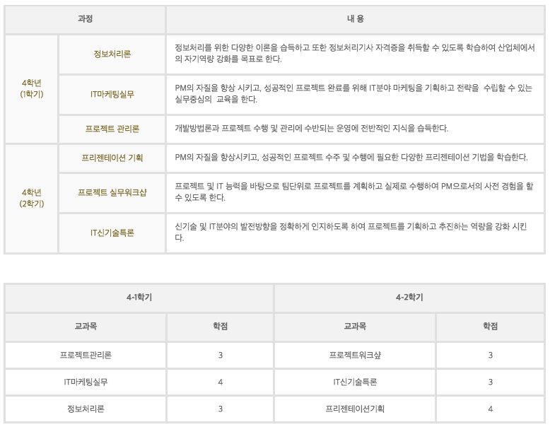
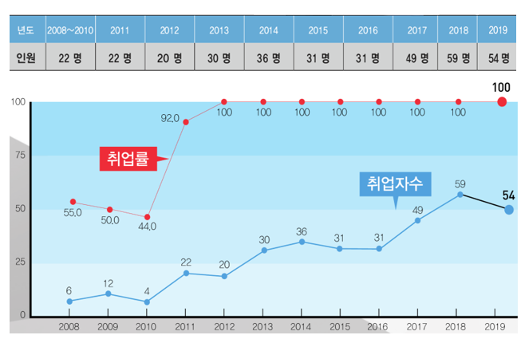
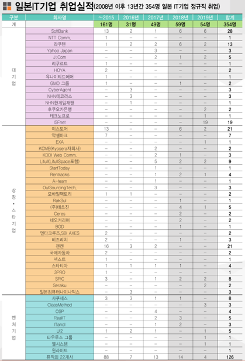

1990년도~2018년 취업률

최근 컴퓨터정보계열 교육부 공시 취업률 (산업체위탁/심화과정 포함.취업률은 교육부 방침에 따라 졸업 2년 후 공시됨)
타대학 동일계열학과 취업률 비교
2018년 대학알리미 공시 기준 (산업체위탁/심화과정 제외)
실무능력 강화 : 졸업작품, 국내외 현장실습 4주
어학 능력 강화 : 해외연수(필리핀,일본)
취득자격증 : 정보처리산업기사, CCNA/CCNP, OCP
인성교육 실시: 직장인의 자세와 예절 교육실시 (매 학기 정규과목
3학년 두 학기에 걸쳐 기획부터 발표까지 (기업 주문) 실무프로젝트 경험
예) 수화교육시스템, School Run(안드로이드 게임), 모바일 자산관리
졸업 후 진출 분야
웹 솔루션 개발자(FrameWork)
웹 데이터베이스 관리자
스마트폰 어플 개발자
컴퓨터시스템설계/분석가
응용소프트웨어(App) 개발자
시스템운영/관리자
IT컨설턴트
네트워크/보안/정보통신 서비스 관련업체
게임 개발/운영 관련업체
모바일/임베디드 관련업체
웹개발/웹컨텐츠/앱컨텐츠 개발 및 운영업체
국내 대기업 전산실 및 SI 업체
정부기관(공무원), 금융기관 및 각종 산업체의 전산실
IT 관련 벤처 창업
주문식 협약반 구성 및 운영
일본IT기업주문반(주문기업 : 이데아크로스, 크레디콤 등 일본 IT기업)
일본 ISFnet 주문반 (주문기업 : ISFnet)
DB프로그래밍/웹솔루션반(주문기업 : 도원유비텍, (사)IT여성기업인협회, 한국S/W개발업협동조합 등)
네트워크/보안반(주문기업 : 시스게이트, KT-ITS, SK브로드밴드, 한국CCTV협동조합 등)
모바일게임콘텐츠반(주문기업 : 네오위즈INS, 엑스엘게임즈, KOG, 비엔디 등)
일본IT기업주문반 취업성과
일본IT기업취업실적(2008년 이후 13년간 354명 일본IT기업 정규직 취업)
